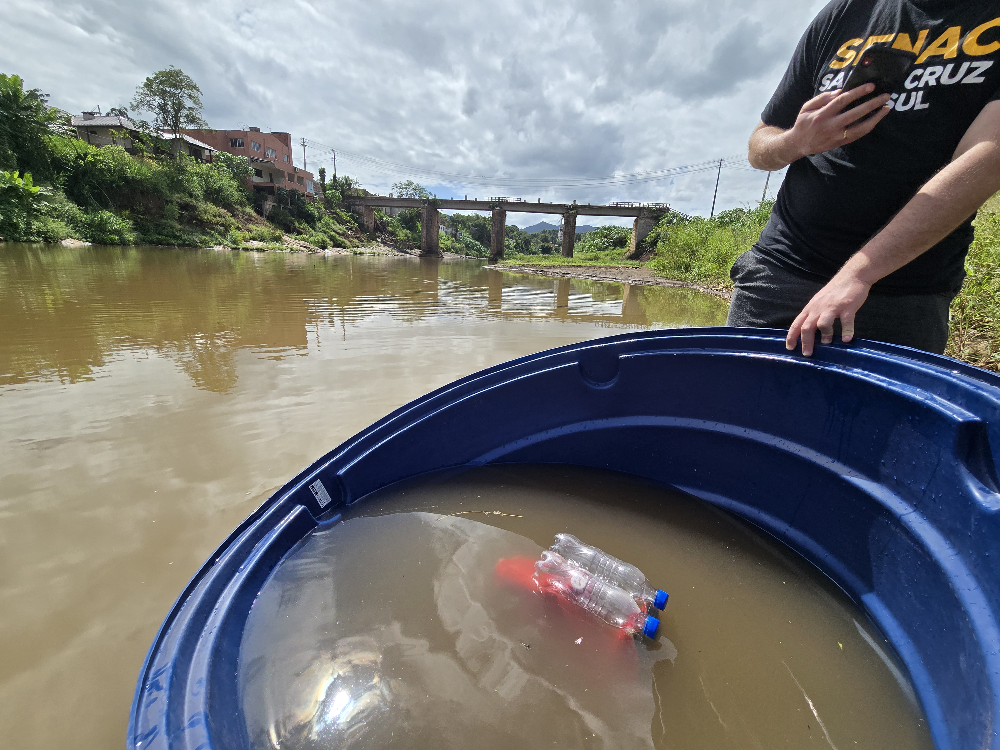
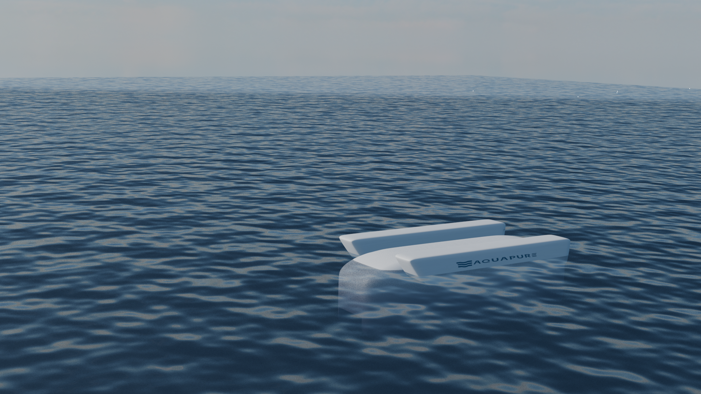

Entre em Contato
Estamos disponíveis para esclarecer dúvidas, receber sugestões e compartilhar mais informações sobre o projeto Salpa. Entre em contato pelos canais abaixo:
Desenvolvemos uma solução inovadora para mitigar a poluição por microplásticos, combinando estratégias de filtragem avançadas e materiais sustentáveis.
Saiba MaisO projeto Salpa utiliza uma tecnologia inovadora de filtragem baseada em ferrofluido, um líquido desenvolvido a partir de óleo de soja, capaz de capturar partículas de plástico e removê-las da água. A pesquisa passou por uma extensa fase teórica, com estudos aprofundados sobre os impactos negativos do plástico no meio ambiente e as possíveis soluções para sua remoção. Atualmente, o projeto encontra-se na etapa de prototipagem, com a implementação do modelo Salpa 1 FV01.
Artigo completoAs fases de teste focaram em diversos pontos para o melhor funcionamento do sistema Salpa. Dentro desses testes tivemos:
Diversas mudanças na composição foram realizadas para alcançar a viscosidade e composição correta.
Desenvolvimento de uma membrana com oliofobia para controle e contenção do ferrofluido internamente.
Escolha de materiais para o corpo da boia visando maior durabilidade, menor custo e impacto ambiental reduzido.
Implementação de um sistema utilizando Arduino e servo motor, com monitoramento remoto via interface.
Todos esses avanços, comprovados em testes laboratoriais, demonstram a viabilidade e eficiência da solução para reduzir a disseminação de microplásticos.
O projeto Salpa tem um futuro promissor, com planos para expandir as capacidades do filtro e integrar novas tecnologias de monitoramento ambiental. A próxima fase envolverá a melhoria contínua da eficiência do sistema, a automatização do processo de filtragem e a ampliação do escopo para diferentes tipos de ambientes aquáticos. Com parcerias estratégicas e investimentos em pesquisa, pretendemos transformar essa iniciativa em uma solução escalável e sustentável de mitigação dos microplásticos.
Estamos disponíveis para esclarecer dúvidas, receber sugestões e compartilhar mais informações sobre o projeto Salpa. Entre em contato pelos canais abaixo: